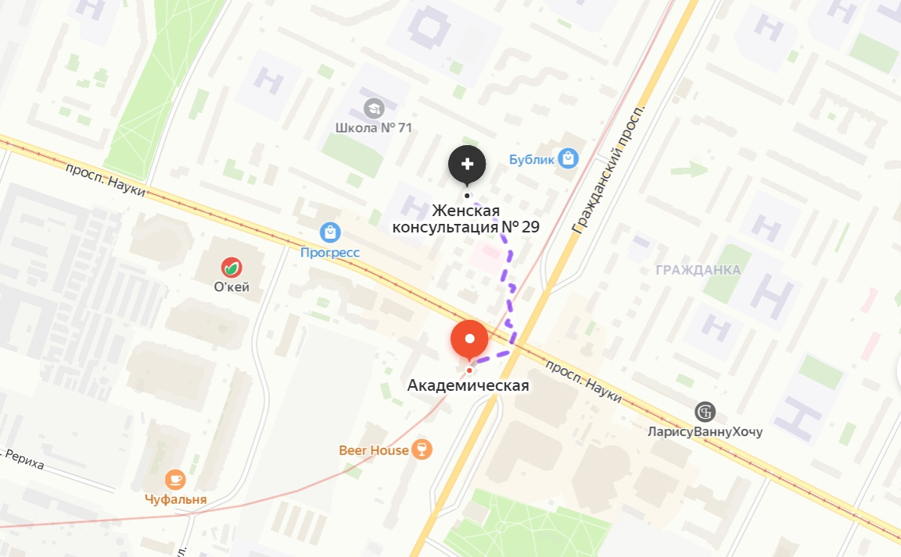
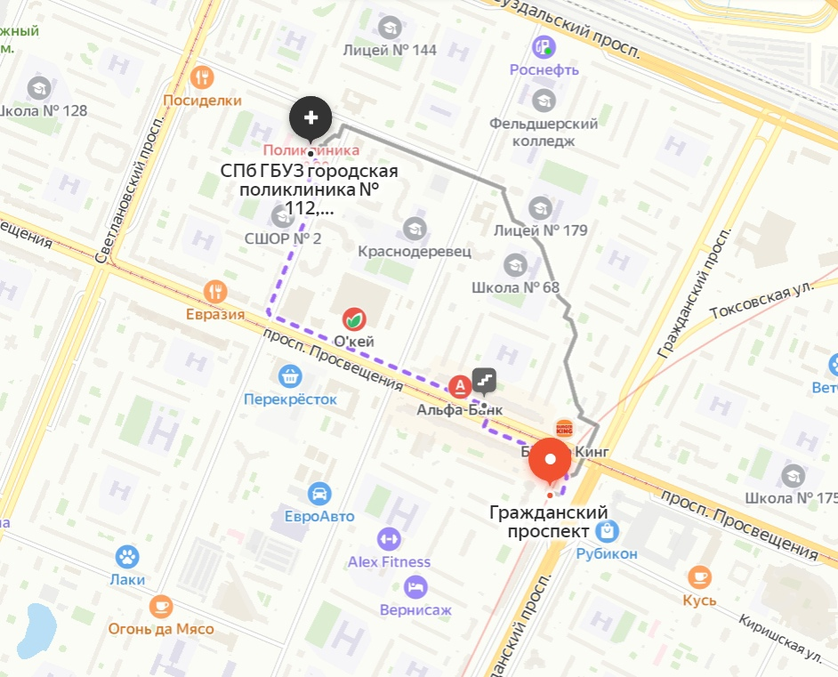
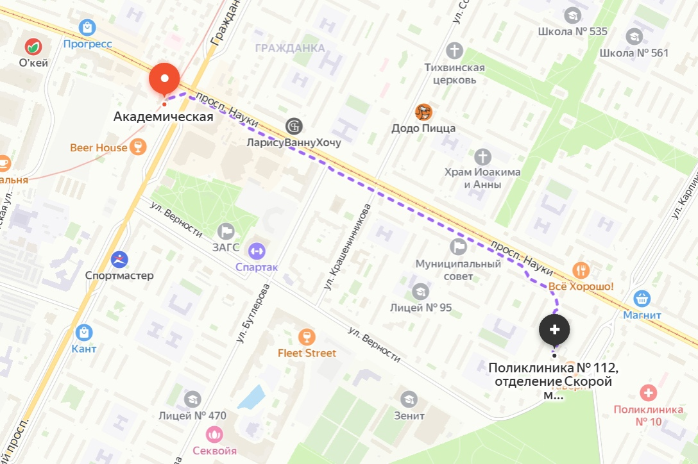

Сведения о медицинской организации
Санкт-Петербургское государственное бюджетное учреждение здравоохранения «Городская поликлиника № 112»
195427, Санкт-Петербург, ул. Академика Байкова, д. 25, корп. 1а
Структурные подразделения
Поликлиника № 112
195427, Санкт-Петербург, ул. Ак. Байкова, д. 25, корп. 1
Справочная: 241-29-49

Поликлиническое отделение № 55
195220, Санкт-Петербург, ул. Гжатская, д. 3, лит. А
Справочная: 241-30-01

Поликлиническое отделение № 41
195273, Санкт-Петербург, пр. Науки, д. 71, корп.2
Справочная: 241-29-48

Женская консультация № 29
195257, Санкт-Петербург, пр. Науки, д.12, корп. 4, лит. А
Справочная: 533-17-68

Консультативно-диагностический центр
195297, Санкт-Петербург, ул. Тимуровская, д. 17, корп. 3
Справочная: 241-31-71

Отделение скорой медицинской помощи
195256, Санкт-Петербург, ул. Карпинского, д. 16
Справочная: 299-62-53

Регистрация
ОГРН 1037808001065 (дата внесения в ЕГРЮЛ записи 09.11.2011 за государственным регистрационным номером 8117847615999)
ИНН 7804009870
КПП 780401001
ОКАТО 40273562000
ОКПО 31082693
ОКОНХ 91514
ОКВЭД 86.21
Дата регистрации 13.01.2003 г.
Поставлена на учет в соответствии с положениями Налогового кодекса Российской Федерации в налоговом органе по месту нахождения: межрайонная инспекция Федеральной налоговой службы № 18 по Санкт-Петербургу, код 7804
Структура организации
Учредители: город Санкт-Петербург в лице КУГИ и администрация Калининского района Санкт-Петербурга
Структура и органы управления
Руководители
Главный врач: Власов Дмитрий Александрович
Заместитель главного врача по медицинской части:
Гусев Анатолий Владимирович, 417-50-90
Заместитель главного врача по экспертизе временной нетрудоспособности:
Рыбакова Татьяна Евгеньевна, 555-10-16
Заведующая ГП № 112: Тихонова Наталия Владимировна
И.о. заведующего ПО № 55: Николаева Юлия Александровна
Заведующая ПО № 41: Степанова Юлия Игоревна
Заведующая ЖК № 29: Иванова Елена Васильевна
Заведующая КДЦ: Озерова Наталья Александровна
Заведующий ОСМП: Федоров Эдуард Феликсович
Контакты
Адрес электронной почты: p112@zdrav.spb.ru
Контактный телефон: 555-92-22 (приемная главного врача)
Вызов скорой помощи на дом: 299-62-53 или 299-71-22
Платные услуги: 555-20-21
Страховой стол: 417-51-93
Врач методист по лекарственному обеспечению льготных категорий граждан: 555-21-34
По вопросам жалоб на действия сотрудников СПБ ГБУЗ ГП № 112 просьба обращаться по телефонам: +7 (931) 237-97-15, +7 (812) 555-92-22
Документы
Регистрационный номер лицензии: ЛО-78-01-011077
Дата предоставления лицензии: 26.08.2020
Выдана комитетом по здравоохранению г. Санкт-Петербурга в лице председателя Лисовца Дмитрия Геннадьевича
191023, г. Санкт-Петербург, ул. Садовая М., д. 1, тел. 246-6979